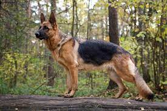

Overview
Generally considered dogkind's finest all-purpose worker, the German Shepherd Dog is a large, agile, muscular dog of noble character and high intelligence. Loyal, confident, courageous, and steady, the German Shepherd is truly a dog lover's delight. German Shepherd Dogs can stand as high as 26 inches at the shoulder and, when viewed in outline, presents a picture of smooth, graceful curves rather than angles. The natural gait is a free-and-easy trot, but they can turn it up a notch or two and reach great speeds. There are many reasons why German Shepherds stand in the front rank of canine royalty, but experts say their defining attribute is character: loyalty, courage, confidence, the ability to learn commands for many tasks, and the willingness to put their life on the line in defense of loved ones. German Shepherds will be gentle family pets and steadfast guardians, but, the breed standard says, there's a 'certain aloofness that does not lend itself to immediate and indiscriminate friendships.It was originally bred as a herding dog, for herding sheep. It has since been used in many other types of work, including disability assistance, search-and-rescue, police work, and warfare. It is commonly kept as a companion dog, and according to the Fédération Cynologique Internationale had the second-highest number of annual registrations in 2013.
Characteristics
- large, agile, muscular dog of noble character and high intelligence.
- Loyal, confident, courageous, and steady.
- German Shepherds Are One of The Smartest Dog Breeds.
- Energetic and playful
Care
German Shepherds are incredibly active dogs that require intense training and regular exercise to keep them out of trouble physically and mentally. They are best for active families and experienced pet parents. Socialization and consistent training will be essential when a German Shepherd is a puppy. This will help them to grow out of unruly behaviors such as nipping and jumping.German shepherds are large and active dogs that are highly intelligent and loyal companions. They require thoughtful care and consistent training in order to live long and happy lives. German shepherds need to be fed and housed properly, in addition to requiring regular health care and exercise. With some effort and care, your German shepherd can live a long and happy life and will be a steady companion for you for years to come.